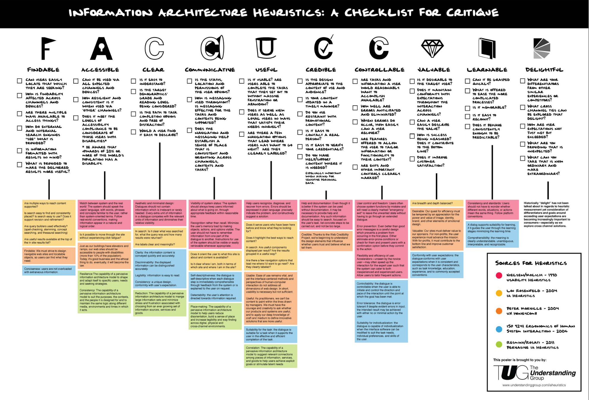

Som miljøbevidst person vil jeg se hvor meget CO2 mine madvarer udleder, så jeg kan få en bedre idé om mit eget klimaaftryk.
User story er et agilt værktøj, som bruges til at beskrive brugerens software funktion fra deres perspektiv. User story beskriver typen af bruger, hvad de ønsker og hvorfor.
Med det sagt, er grunden til vi har valgt at bruge user story fordi det er med til at skabe en enkel beskrivelse af de krav, som vi har til hjemmesiden.
Hvis vi tager udgangspunkt i overproduktion, som vinkel, kan beskeden rettes mod forbrugerne. Deres spisevaner skal fx. ændres, sådan at der bliver sænket på forbruget og mad produktionen.
Vi har foretaget nogle antagelser om fx. producenterne, de siger, at de ikke vil ændre på produktionen
så længe efterspørgslen stadig forbliver den samme. Derfor lægger ansvaret hos forbrugerne, det er deres livsstilsændringer der kan lede til fremtidig forbedring af miljøet og mindskning af overproduktion.
Vi har en ide om at lave en visualisering, som viser en forbrugers CO2 udledning som resultat af deres spisevaner.
Fokus er på forbrugere der er interesseret i at vide hvordan deres forbrug påvirker miljøet, og dertil har vi 2 Personaer.
Lene er 53 år, ene mor til 2 og pædagog. De seneste års miljødebat, har gjort hende interesseret i hendes eget forbrugs påvirkning på miljøet, men hun ved ikke hvilke madvarer hun skal spise mere eller mindre af, hvis hun skal mindske hendes CO2 udledning. Lene og børnene kan godt lide at spise ude, så det gør de ca. 2 gange i måneden. De elsker alle at tilbringe tid i sofaen en lørdag aften med snolder.
Henrik er 55 år, professor på CBS. Før i tiden var Henrik ligeglad med miljøet, kørte rundt i bmw 5. Henrik er glad for at rejse, og hver gang muligheden kom for det, pakkede han kufferten og tog ud at rejse. I dag kører henrik rundt i en tesla, spiser kun økologisk og vegansk, som han får leveret til døren igennem ‘’hellofresh’’. Han vil gerne bruge en visualisering som sammenligner madvarer for at opnå en bedre forståelse for forskellige madvarer og deres klimaaftryk.
Brugeren kan tydeligt se hvor meget CO2 de forskellige retter udleder, samt gå i dybden på hver enkelt ret.
Det er vigtigt at brugerne skal kunne stole på den information der er tilgængelig i vores visualisering, så de pålideligt kan regne med at deres klimaaftryk er som visualiseringen påstår.
Det er vigtigt at dataen hurtigt kan opfattes, samtidig med at der er læringsværdi i den information der fremstilles
Vores ide er brugbar eftersom, folk der går op i Co2 nemt og simpelt skal kunne finde den data de skal bruge på div. madvare.
Vores visualisering skal skabe værdi for brugeren, da vi ikke er den eneste hjemmeside der skaber overblik over ens Co2 produktion (baseret på ens madvarer).
Affordances beskriver forholdet mellem et objekt og en bruger. Det beskriver de handlinger en bruger kan opfatte og udføre. Ved at bevæge vælge en tabel fra vores dropdown menu kan brugerens handlinger på hjemmesiden ændre outputtet i tabellen.
Alle affordances er ikke åbenlyse og derfor bruges signifiers til at understrege hvilke handlinger der er mulige og hvordan funktioner evt. ideelt bør bruges. Vi har gjort det tydeligt over for brugeren at de kan vælge forskellige tabeller via en dropdown menu, med en tekst der tilbyder brugeren at trykke på menuen. Scroll-pilen på forsiden gør det tydeligt at der er mere at undersøge på hjemmesiden ved at tilbyde brugeren at trykke på pilen og scrolle længere ned af siden.